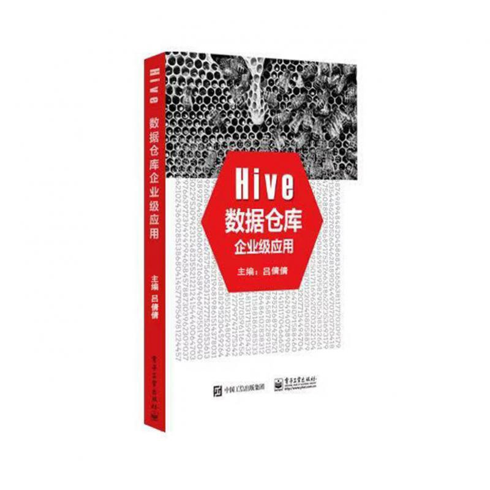

原文连接:https://www.cnblogs.com/midoujava/p/11785621.html

压抑了这么久了，是时候来一啵活动了。为了感谢朋友们一直以来的支持，今天米兜得到一位既是主编也是粉丝的支持，将赠送来自这位朋友编写的一本书籍《Hive数据仓库企业级应用》。此书真心推荐朋友们阅读。
本次赠书活动规则：
第一阶段：11月2日-11月8日，将从点击本文在看且转发朋友圈的朋友中抽取一位，记得添加文末作者群哦，实体书包邮到家。
第二阶段：11月2日-11月15日，将从转发本文的朋友中，朋友圈点赞最多的朋友中抽取一位，记得添加文末作者群哦，实体书包邮到家。[如果点赞大于等于50的朋友多余5位，将抽出两位朋友]
第三阶段：11月8日-11月22日，将抽取两位朋友，记得添加文末作者群哦，实体书包邮到家。活动规则，待第一阶段结束后公布。

移动互联、电子商务、社交网络大大拓展了互联网的疆界和应用领域，我们正处在一个数据爆炸性增长的时代，大量的数据对人类的数据驾驭能力提出了新的挑战和机遇。就在这时，人们提出了大数据的思想，大数据是指那些超过传统数据库系统处理能力的数据。其数据规模和传输速度要求很高，或者其结构不适合原本的数据库系统。但是我们为了得到它其中的价值，就不得不使用一些技术手段去处理它。大数据分析常和云计算联系在一起，因为实时的大型数据集分析需要MapReduce一样的计算框架来向不同机架，甚至是不同数据中心中的电脑分配工作。正是由于Hadoop中的MR框架才可以让人们处理TB级的数据。

正如上面的漫画，由于MapReduce框架只有专业的开发人员才可以使用，SQL的人就没办法去使用该框架处理一些数据，因此人们发明了Hive的组件，Hive也是Apache的顶级项目，它底层的计算引擎是MR（离线计算框架）或者是Tez（基于Hadoop YARN之上的DAG计算框架），人们可以使用简单的类SQL语句就可以跑出MR程序，从而来完成复杂的数据处理工作，Hive让更多的人可以去处理大数据，并且让这份复杂的工作不再成为很困难的事情。Hive是一种底层封装了Hadoop的数据仓库处理工具，使用类SQL的HiveQL语言实现数据查询，所有Hive的数据都存储在Hadoop兼容的文件系统（例如，Amazon S3、HDFS）中。Hive在加载数据过程中不会对数据进行任何的修改，只是将数据迁移到HDFS设定的目录下。Hive的设计特点如下，
- 支持创建索引，优化数据查询。
- 不同的存储类型，例如，纯文本文件、Hbase中的文件。
- 将元数据保存在关系数据库中，大大减少了在查询过程中执行语义检查的时间。
- 可以直接使用存储在Hadoop文件系统中的数据。
- 内置大量用户函数UDF来操作时间、字符串和其他的数据挖掘工具，支持用户扩展UDF函数来完成内置函数无法实现的操作。
- 类SQL的查询方式，将SQL查询转换为MapReduce的job在Hadoop集群上执行。
最后，介绍一下小编最近写的一本书，叫《Hive数据仓库企业级应用》。
在介绍这本书之前，首先跟大家分享一下小编写这本书的缘由。我也不知道是一个多么幸运的机会，让小牛和电子社的老师找到我。答应写书之后，已经数不清多少个夜晚在加班之后回去和周末还要继续创作，在我写这本书的过程当中，我深深体会到了自己的想法还是受言语和表达的束缚。在坚持了一年多的时间里，电子版校对和纸质版的校对不计其数，曾经因为内容以及表达的问题，被返稿了多次，也一度想要放弃，但是我相信坚持下去就会得到想要的结果。就在历时大概快两年的时间之后，这本书总算接近了尾声，看到了自己想要的结果。
说了这么多，我们来看一下这本书的内容，本书主要的出发点是为了让更多的人去学会Hive，将实战与原理相结合。从最基础的语法讲起，
实战方面共分为了24章去讲解，从最基础的HQL语法到HQL优化，以及最后的案例实战，整个过程都是含有实战性代码以及运行结果。
原理部分的关键是最后的Hive的源码剖析，让广大读者可以跟随小编去了解Hive的运行机理，方便我们更深入的了解Hive的运行机制。更加重要的是，我们可以从中了解到某一个组件之所以这么被看好，它的奥妙所在。
全书大致包含的内容如下:
-------------------------------------------------Hive介绍篇--------------------------------------
- 第1章 Hive基础知识：Hadoop、Hive概述
- 第2章 Hive配置
-------------------------------------------------Hive入门篇--------------------------------------
- 第3章 Hive的基本操作
- 第4章 HiveQL：数据定义（数据库和表）
- 第5章 HiveQL数据操作
- 第6章 HiveQL：查询（select、where、group by、join、order by和sort by、distribute by、cluster by、Hive类型转换、抽样查询、UNION ALL）
- 第7章 HiveQL：视图
- 第8章 HiveQL：索引
- 第9章 模式设计
-------------------------------------------------Hive进阶篇-------------------------------------
- 第10章 调优
- 第11章 其他文件格式和压缩方法
- 第12章 开发
- 第13章 函数（发现和描述、调用、聚合、表生成函数）
- 第14章 Streaming（介绍及代码编写、使用分布式内存）
- 第15章 自定义Hive文件和记录格式（SequenceFile、RCFile、CSV和TSV SerDe）
-------------------------------------------------Hive强化篇--------------------------------------
- 第16章 HCatalog（介绍、命令行、架构）
- 第17章 Hive和Oozie整合（Oozie简介、Oozie多种操作、Oozie Coordinator使用）
- 第18章 Hive和亚马逊网络服务系统（AWS）
- 第19章 存储处理程序和NoSQL（Storage Handler Background、HiveStorageHandler、Cassandra、DynamoDB）
-------------------------------------------------Hive实战篇--------------------------------------
- 第20章 Hive大数据分析之战
- 第21章 Hive广告日志数据开发
- 第22章 Hive电商数据开发
- 第23章 Hive数据分析及定时任务调度
- 第24章 Hive电视收视率统计项目开发
-----------------------------------------------Hive源码剖析篇---------------------------------
- 第25章 Hive源码剖析（SemanticAnalyzer、MapRedTask、ExecDriver、源码剖析图）
创新点：源码部分从读取源码时候的环境搭建，然后每一步的函数调用，会跟随小编的思路，浏览遍Hive的源码。实战部分根据几个企业级的真实数据以及真实场景去做的整个项目，可以跟随小编了解到企业中Hive的应用场景是怎么样的。
适读人群：主要偏向于想要了解源码、想要学习企业中开发的流程、对大数据感兴趣并且想要学习的人。
最后，《Hive数据仓库企业级应用》是小编要上的一本书，感兴趣的朋友可以进行关注。
专注于大数据、机器学习、云计算方面的研究，感兴趣的小伙伴可以扫码交流，一起组建技术交流群，本书出版之后，将会逐一邮寄给幸运的朋友。以下是作者个人微信和技术交流群，欢迎大家踊跃加入。
| 技术交流群 | 作者个人微信 |
|---|---|
@END
欢迎关注米兜Java，一个注在共享、交流的Java学习平台。